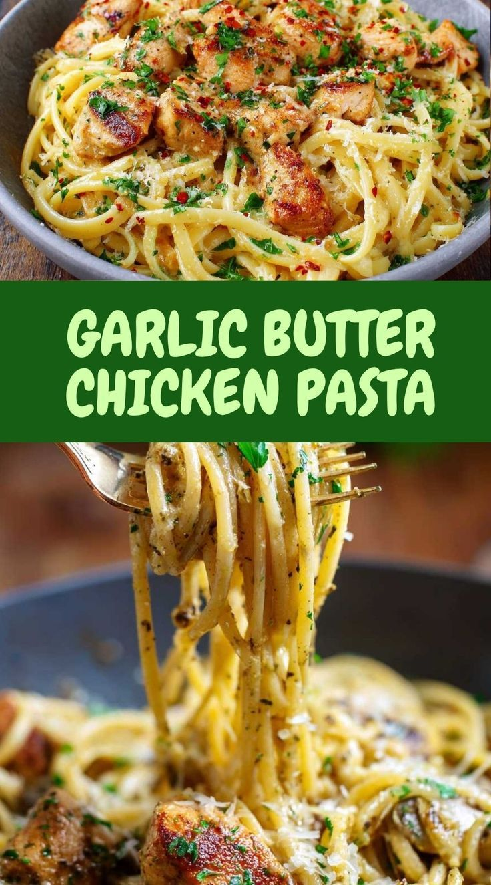

Simple Garlic Butter Chicken Pasta for Busy Nights hits all the right notes— juicy chicken, buttery sauce, and tender pasta. It’s the kind of quick dinner that tastes like comfort and feels like a win.
Bring a large pot of salted water to a rolling boil. Add the pasta and cook according to package directions until al dente. Stir occasionally to prevent sticking. While the pasta boils, you can already smell the anticipation of dinner. Once the noodles are perfectly tender with a slight bite, scoop out half a cup of pasta water, then drain the rest. Set the pasta aside. The salted water gives the pasta its first layer of flavor, preparing it for the buttery sauce waiting ahead.
Place a skillet over medium-high heat. Add olive oil and one tablespoon of butter. Once the butter starts to bubble, toss in the chicken pieces. Season with salt, black pepper, and paprika. The sizzle instantly fills the room with excitement. Stir occasionally for about five to seven minutes until the chicken turns golden and cooked through. You can almost hear the applause from your family as the aroma builds. Transfer the cooked chicken to a plate and keep it warm.
In the same skillet, melt the remaining butter over medium heat. Add minced garlic and sauté for about one minute until fragrant but not browned. The smell is irresistible. Sprinkle in the chili flakes if you like a little kick. Stir constantly to keep the garlic from burning. This moment is where the energy peaks; everything smells amazing, and you know the sauce is about to come alive.
Pour the reserved pasta water into the skillet and bring it to a simmer. Stir gently, scraping the bottom of the pan to combine all the flavorful bits left from the chicken. Add the cooked pasta directly into the skillet, tossing it with the garlic butter mixture. The noodles will glisten as they soak up the sauce. Add the chicken back in and toss again until everything is evenly coated. Sprinkle Parmesan cheese over the top and keep stirring until the cheese melts smoothly into the sauce. The transformation feels instant and magical.
Taste the pasta and adjust the seasoning if needed. Add more salt or pepper to suit your crowd. Sprinkle chopped parsley for color and freshness. Let it cook for another minute until the sauce thickens slightly and coats every strand evenly. The butter will shine, the chicken will look golden, and the whole skillet will seem ready for applause. Turn off the heat and get ready to serve.
Transfer the pasta to a large bowl or serve straight from the skillet for a casual, lively vibe. Squeeze lemon wedges over the top for brightness. The scent of garlic butter and the shine of the noodles make it impossible to resist. Watch how quickly everyone grabs a fork. Each bite delivers creamy, garlicky joy and tender bites of chicken. This dish does not whisper—it shouts celebration.